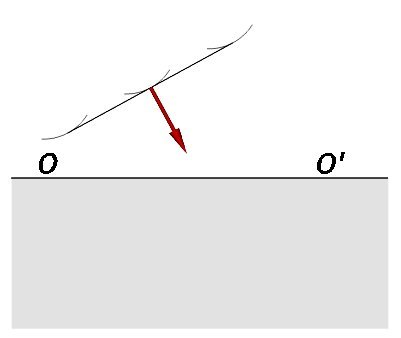
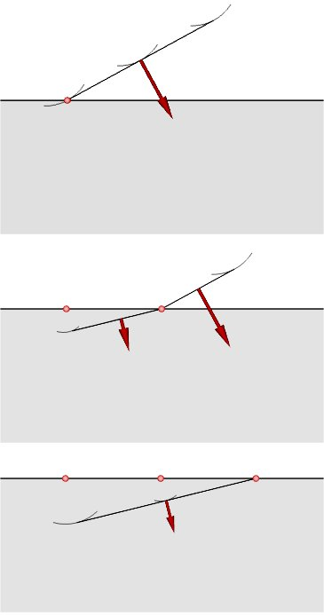
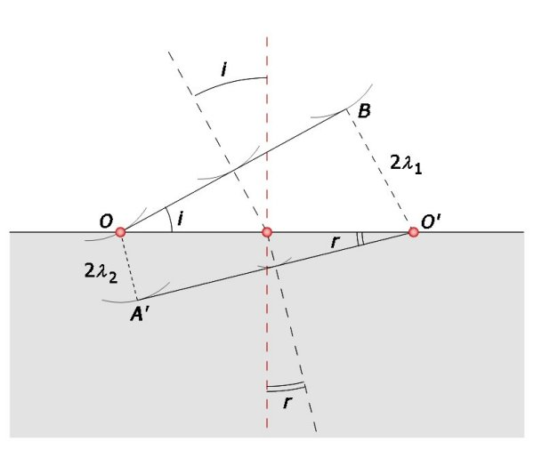
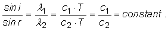

Unde mecanice
C.5. |
|
Refracţia undelor mecanice |
 Provocarea 1C5−1
Provocarea 1C5−1
Discontinuitatea OO' din figura 1C5−1 reprezintă graniţa de separaţie dintre două zone în care vitezele de propagare ale unei unde
sunt diferite: c1 "deasupra" discontinuităţii şi c2 "sub" aceasta (c2 < c1).
|  |
Fig. 1C5-1. Un front plan de undă se îndreaptă către o discontinuitate.
|
Cum te aştepţi să se propage un front de undă plan după ce trece prin suprafaţa discontinuităţii?
Folosind principiul lui Huygens, poţi "construi", pas−cu−pas, drumul undei. Figura 1C5−2 prezintă etapele propagării undei, ciclu cu
ciclu.
|  |
Fig. 1C5-2. Viteza undei se modifică la trecerea prin suprafaţa unei discontinuităţi.
|
Frontul de undă rămâne plan, dar direcţia de propagare se "frânge" la trecerea prin suprafaţa discontinuităţii.
 Numim refracţie modificarea direcţiei de propagare a unei unde la trecerea prin suprafaţa unei discontinuităţi.
Numim refracţie modificarea direcţiei de propagare a unei unde la trecerea prin suprafaţa unei discontinuităţi.
Provocarea 1C5−2
Care te aştepţi să fie relaţia dintre unghiul de incidenţă şi cel de refracţie?
Vitezele de propagare fiind diferite de o parte şi de cealaltă a discontinuităţii, lungimile de undă sunt diferite în cele două zone. În triunghiul
OBO' din figura 1C5−3:
i fiind unghiul de incidenţă (unghiul dintre direcţia de propagare a undei incidente şi normala la suprafaţa discontinuităţii în punctul de incidenţă).

Fig. 1C5-3. Obţinerea relaţiei dintre unghiurile de incidenţă şi de refracţie.
După trecerea prin suprafaţa discontinuităţii, viteza şi lungimea de undă se modifică (scad, în acest caz), astfel că, din triunghiul OA'O':
r fiind unghiul de refracţie (unghiul dintre direcţia de propagare a undei refractate şi normala la suprafaţa discontinuităţii).
Din relaţiile (1) şi (2) rezultă relaţia dintre unghiul de incidenţă şi cel de refracţie:

Aşadar,
Raportul sinusurilor unghiurilor de incidenţă şi de refracţie este egal cu raportul vitezelor de propagare în cele două medii (legea refracţiei).
Figura 1C5−4 prezintă fotografia undelor pe suprafaţa apei care se refractă printr−o discontinuitate plană, care separă două zone în care vitezele
de propagare sunt diferite (viteza undelor pe suprafaţa apei depinde de adâncimea apei).

Fig. 1C5-4. Unde pe suprafaţa apei, care se refractă prin suprafaţa unei discontinuităţi.
Fenomenele de reflexie şi de refracţie oferă posibilitatea modificării, după dorinţă, a direcţiei de propagare a undelor. Forme convenabile ale suprafeţelor
de discontinuitate, pot redirecţiona, concentra sau dispersa undele, după dorinţă.